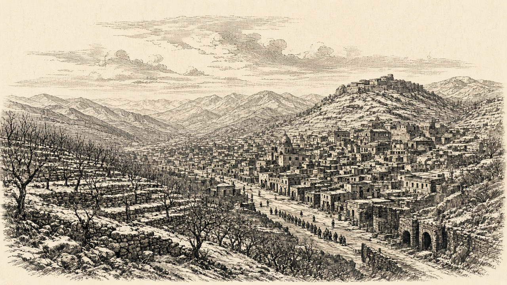

ナンサプ陥落 桃谷の首都がオリョルッル領に
公報の首都欄は陥落 なのです巡洋艦は紅峰の敵艦を砲戦の末撃沈 スルガは青海へ宣戦

【総合部】第191期、オリョルッル王国は桃谷連邦共和国の首都ナンサプ（41,43）を占領した。公報の首都欄は「陥落」に改められ、首都の座標欄は空欄となった。同じ期に町（42,44）と兵站基地（41,44）もオリョルッル領となり、兵站では予備兵千九百人が投降した。桃谷の人口は一万六千人、兵力五万七千百人、領土は四区画。詳報は3面。
なのです海軍、敵艦を撃沈
なのです主義人民共和国の巡洋艦は紅峰公国沖（47,56）で砲戦し、敵艦を撃沈した。巡洋艦の発砲地点は（46,58）。撃沈の詳報は4面。
スルガは青海共和国へ宣戦を布告し、開戦は第196期。紅峰では町や兵站、軍港がなのですに占領された。国特集は8面のシンジケート連邦。